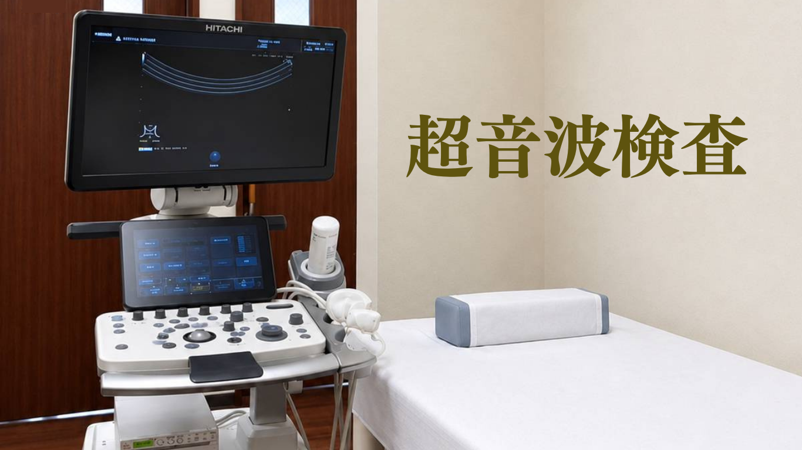

さまざまな臓器や部位をその場で確認できる超音波検査で、日々の健康を見守ります
超音波検査は、症状があるときだけでなく、生活習慣病などの経過観察や健診・予防のための定期的な健康チェックにも適しています。当院では、幅広い範囲の部位の検査に対応し、地域の皆さまの健康維持をサポートいたします。
超音波検査とはどんな検査？
超音波検査（エコー検査）は、人間の耳には聞こえない高い周波数の音（超音波）を体に当て、その跳ね返ってきた「音の響き」を映像化して、体の中の様子をリアルタイムで観察する検査です。やまびこが壁に当たって戻ってくるのと同じ原理を利用しているため「エコー」とも呼ばれます。
誰もが安心して受けられる
「3つの安心」
- 放射線を使わないので、定期的な健康チェックに適した検査です。
- 短期間に何度も繰り返し検査を行うことができるため、高齢の方でも安心して受けていただけます。
- 臓器の様子や血流をリアルタイムで確認しながら診察を行います。
- 検査直後、その場で患者さまに画像をご覧いただきながら結果をご説明いたします。
- 服を着替える必要がなく、準備を含めても15分から20分程度で受けられる、比較的短時間の検査です。
- お体の負担に配慮しながら、スムーズに検査を行います。定期通院の際にも受けていただきやすく、高齢の方にも配慮した検査です。
当院の超音波検査の特徴
お腹（肝臓・胆のう・膵臓・腎臓）はもちろん、首（頸動脈・甲状腺）、下腹部（膀胱・前立腺・子宮・卵巣）まで、様々な部位に対応しています。
長年の臨床経験と専門知識を持つ、消化器病専門医が検査を行います。慢性疾患の経過観察はもちろん健康状態を確認するための検査など、症状や目的に応じて丁寧に検査を行います。
検査の結果、より高度な精密検査や治療が必要と判断した場合は、地域の基幹病院や専門医療機関へご紹介します。まずは当院で診療・検査を行い、必要に応じて適切な医療機関につなげる体制を整えています。
超音波検査でわかること
「沈黙の臓器」とも呼ばれる肝臓などの状態や、頸動脈の動脈硬化の程度などを確認することができます。自覚症状がない段階で異常が見つかることもあり、疾患の早期発見・早期治療につながります。
- 肝臓：脂肪肝、肝硬変、腫瘍
- 胆のう：胆石、ポリープ
- 膵臓：膵炎、腫瘍
- 腎臓：結石、嚢胞
排尿のお悩み・下腹部チェック
- 前立腺：肥大、腫瘍
- 膀胱：結石、腫瘍
- 卵巣：嚢腫、腫瘍
- 子宮：筋腫・腫瘍
※上記は代表的な所見の一例です。
血管の壁の厚さやプラークの状態を確認し、動脈硬化の程度を評価します。脳梗塞や心筋梗塞のリスクを考える上での参考となる検査です。
しこり（結節・腫瘍）の有無、甲状腺の腫れ、質感の変化、血流の状態を確認します。
※肺・胃・腸などの空気が入る臓器の診断や評価には適しません。内視鏡やCT、MRIなどの検査が必要な場合は、速やかに地域の基幹病院等にご紹介いたします。
超音波検査をおすすめする方
生活習慣病はサイレントキラーとも呼ばれるため、エコー検査による定期的な「見える化」は、重症化予防や健康寿命を延ばすことにつながります。
- 血糖値やコレステロール、血圧の異常を指摘された方
- 甲状腺腫大と言われた方
- 肝機能、膵機能、腎機能の数値が高い方
- 脂肪肝、胆のうポリープ、胆石と言われた方
- 尿検査で「糖、タンパク、潜血」が出た方
- 首に腫れやしこり、違和感がある
- 腹痛や背中に違和感がある
- 排尿痛、頻尿、血尿がある など
- 肝臓・胆のう・膵臓などの状態を確認したい方
- 前立腺・膀胱など、泌尿器の状態が気になる方
- 症状がなくても、定期的に健康状態をチェックしたい方
よくある質問
Q. 検査は痛いですか？
A. 痛みのない優しい検査です。
ゼリーを塗って表面を滑らせるようにプローブ（探触子）を当てるだけですので、痛みはありません。
※部位によって詳細な観察をするため、ゼリーを当てた部分を少し押さえる場合があります。痛みを感じた場合は、我慢せず遠慮なくお伝えください。
Q. 当日の服薬は止める必要がありますか？
A. 原則として、お薬は通常通り服用していただいて構いません。
高血圧症や心臓病などの持続してお飲みいただくお薬は、少量の水で普段通り服用してください。予約時にご説明いたしますが、ご不安な場合はスタッフにご相談ください。
Q. 健康保険は使えますか？
A. 医師が診療・診断のために必要と判断した場合は、健康保険が適用されます。
症状があり、医師の指示で検査を行う場合は保険適用となります。受診の際は必ずマイナ保険証または健康保険証をお持ちください。
※症状がない場合の健康診断目的での受診は、自費診療（全額自己負担）となります。
Q. 食事制限はありますか？
A. 血液検査が必要かどうか、血液検査の内容等で制限内容が変わりますので、事前に看護師よりご説明申し上げます。
※当院では、特にご高齢の患者さまには、お身体への負担や体調変化に配慮し、「検査の3時間前までに、ごく軽めの食事」をおすすめしております。完全な絶食による体調不良（低血圧や貧血、気分不快など）を防ぎ、安心して受診していただけるよう配慮した取り組みです。
患者さまの持病や体調に合わせた具体的な注意事項は、事前に看護師より丁寧にご説明いたします。ご不明な点はお気軽にご相談ください。
Q. 定期的に受けるべきですか？
A. 状態や持病に応じて、定期的な受診をおすすめしています。
超音波検査は身体に負担がないため、経過観察に適しています。特に肝臓や胆のうの持病、生活習慣病をお持ちの方、あるいは過去に「経過観察」と診断された方は、血液、尿検査とともに定期的に（半年に1回～年に1回）検査されることをお勧めします。気になる症状がある場合や、前回の検査から期間が空いている場合は、お気軽に医師にご相談ください。
患者さまへメッセージ
ちょっと気になることがあるけれど、忙しいし、面倒だし、まだ我慢できるからと後回しにされていませんか。
診察して、問題なければご安心いただけますし、万が一何か見つかっても早期発見・早期対応が何よりの安心につながります。
また、毎日の生活習慣を整え、内臓や血管の今の状態を知り、健康管理していくことで、未来の健康状態を守ることにつながります。
大がかりな準備は不要です。「今」の状態を知るために、どうぞお気軽にご相談ください。